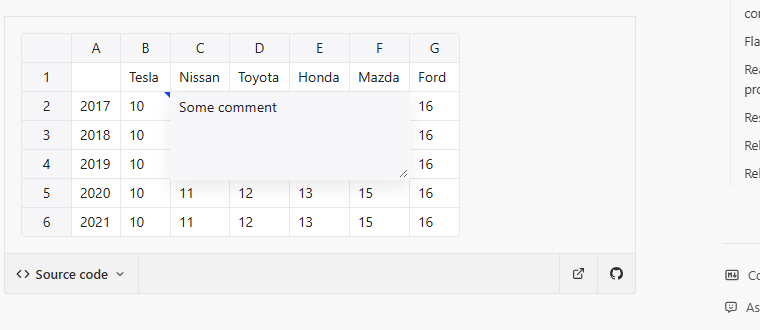
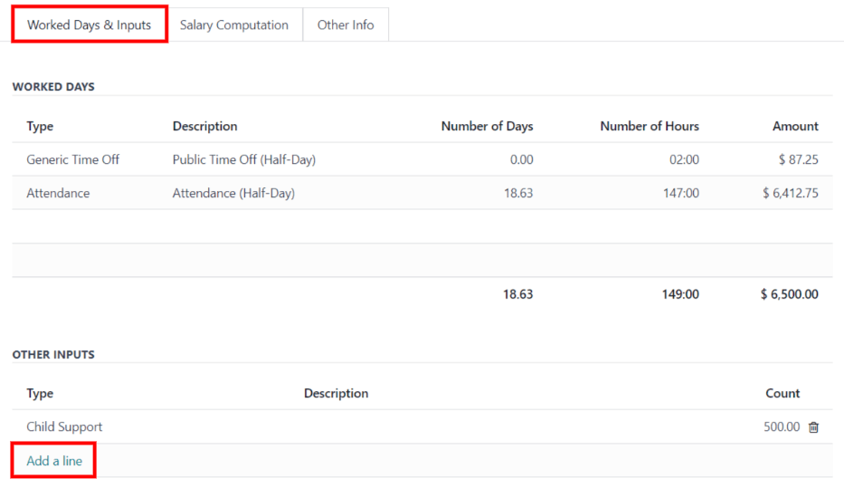
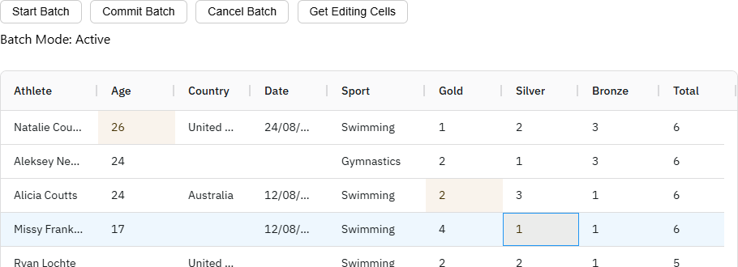

Màn Lương → Khoán theo tổ giữ nguyên bố cục đã duyệt (quỹ tổ → Chia cho người → Sổ sản lượng). Ba phương án chỉ khác ở CÁCH kế toán sửa. Cả ba cùng một kịch bản trên số thật của tổ Dán - nhóm 1 tháng 10/2026 (DB dev):
Chung cho cả ba: dữ liệu xưởng không đổi; ô đã sửa có dấu góc xanh, rê chuột thấy số máy, số kế toán, lý do, ai sửa và lúc nào; luôn có nút trả về số máy; kỳ lương đã chốt thì mọi ô chỉ xem. Bảng lương tháng nhận số mới khi bấm Tính lại (dải vàng trên thanh công cụ nhắc việc này).
Đã đọc trước khi vẽ: services/khoan_ky.py (tinh: _ngu_canh, _tien_chinh, _so_lan_chay, danh sách thieu, chia theo lương ca máy, trích tổ trưởng), services/khoan_theo_to.py,
routers/payroll.py (/khoan-theo-to, PUT /lines ô Điều chỉnh lương, /generate), payroll_service.get_table (bảng lương lưu số), KhoanTheoToTab.tsx (BangSo, NguoiLan, TienLan) và mockup gốc khoan-theo-to-a-chi-tiet.html (lấy nguyên CSS).
Giống Excel nhất: bấm tiền của lần ghi thì bung khung nhỏ ngay dưới ô để sửa số đưa vào công thức hoặc gõ thẳng tiền; bấm tiền một người để gõ phần của người đó; dòng tay thêm ở hàng ngày; khoản bù kỳ trước thêm bằng nút dưới sổ, mở khung gõ tiền từng người. Mỗi lần lưu là một ô một lý do. Hợp khi kế toán sửa lẻ vài ô mỗi kỳ. Yếu: các ô sửa được nằm rải rác, muốn rà lại cả kỳ phải bật lọc Chỉ dòng có sửa tay.

| Người | Sản lượng | Tổ trưởng chia | Lương khoán | Phân bổ lương bù lỗ | Chênh lệch | Lương chính | Bù kỳ trước |
|---|---|---|---|---|---|---|---|
| Phan Văn Quí tổ trưởng lương bù lỗ 10.000.000 | 100.588 | 15.200 | 115.788 | 0 | +115.788 | 115.788 | −9.804 |
| Nguyễn Minh Thảo lương bù lỗ 8.500.000 | 101.129 | 101.129 | 0 | +101.129 | 101.129 | −8.333 | |
| Mai Thị Bảo Trang lương bù lỗ 7.000.000 | 83.283 | 83.283 | 0 | +83.283 | 83.283 | −6.863 | |
| Trần Tùng Dán - thử việc lương bù lỗ 8.000.000 | 3.800 | lương chính tính ở tổ của họ | |||||
| Cộng | 288.800 | 15.200 | 300.200 | 0 | 300.200 | −25.000 | |
Bù kỳ trước không vào quỹ tổ, không trích tổ trưởng, không đem so lương khoán với lương bù lỗ: bảng lương cộng thẳng vào thực nhận như hai cột "Cộng bổ sung tiền canh máy" của sổ T08.
| Lệnh sản xuất | Khách hàng | Giấy và quy cách (cm) | Công đoạn | Tuỳ chọn | Việc phát sinh | Số lượng | Tiền | Người tham gia |
|---|---|---|---|---|---|---|---|---|
| T5 22/10+ Dòng tay | Tổ làm | 200.000 | ||||||
| LSX26-0002 Hop thu khoan 22-10 | CÔNG TY CỔ PHẦN BIBICA | DUPLEX 230-250GSM230 gsm
| Dán TĐ + đóng thùng ( 60cm trở xuống) | thả tay (+10 đ/cái) | — | 5.000 | 200.000 |
|
| T6 23/10+ Dòng tay | Tổ làm | 104.000 | ||||||
| LSX26-0003 Hop thu bac Pantone | CÔNG TY CỔ PHẦN BIBICA | DUPLEX 230-250GSM230 gsm
| Dán TĐ + đóng thùng | — | 1.000 | 70.000 |
+ Thêm người hưởng | |
| Dán TĐ + đóng thùng | làm kèm nhóm | — | 200 | 4.000 |
| |||
| dòng tay | — | — | Dán lại hộp lỗi keo khách trả | — | — | 30.000 Dòng tay của kế toán Lý dokhách trả hộp lỗi keo, tổ dán lại tay ngoài lệnh Ai sửaKế toán lương lúc 23/10 10:40 |
| |
| LSX26-0004 Hop dap day khoa | CÔNG TY CỔ PHẦN BIBICA | DUPLEX 230-250GSM230 gsm
| Dán đáy khoá | — | 800 | Tính tay | máy chưa tính tổ chưa có giá ở bảng giá theo tổ Mai Thị Bảo Trang và Nguyễn Minh Thảo | |
Khoản sửa tiền đã trả ở kỳ đã chốt (vd lệnh vắt hai kỳ trả canh quá 50.000). Kế toán gõ tiền âm hoặc dương cho từng người đã làm, cộng thẳng vào lương kỳ này.
| Kỳ gốc | Nội dung | Người | Tiền | Lý do | Ai sửa | |
|---|---|---|---|---|---|---|
| 09/2026 | LSX26-0001 Dán TĐ + đóng thùng tiền canh máy | Phan Văn Quí | −9.804 | kỳ 09 đã chia canh 50.000 cho 1 lần, kỳ 10 có thêm lần thứ 2 ăn 25.000 nên trả quá 25.000 | Kế toán lương 23/10 10:50 | Xoá khoản |
| Nguyễn Minh Thảo | −8.333 | |||||
| Mai Thị Bảo Trang | −6.863 |
| Máy | Kế toán | |
|---|---|---|
| Số lần ghi sản lượng | 2 | 1 |
| Giá cố định | 50.000 | |
| Đơn giá khoán | 20 | |
| Không canh máy | không tick | |
| Thả tay (+10 đ/cái) | không tick | |
| Khổ trên 60cm | không tick |
| Người | Tiền | |
|---|---|---|
| Phan Văn Quí | −9.804 | × |
| Nguyễn Minh Thảo | −8.333 | × |
| Mai Thị Bảo Trang | −6.863 | × |
| Thêm người | ||
Bấm một lần ghi thì mở ngăn bên phải (khuôn ngăn chi tiết của app: tab Điều chỉnh và Lịch sử). Ngăn liệt kê đủ mọi thứ sửa được của lần đó: số đưa vào công thức, tiền, người hưởng và tiền cố định từng người, thêm người hưởng. Dòng tay và khoản bù kỳ trước mở cùng ngăn đó. Bảng sổ giữ nguyên chỉ đọc. Hợp khi một lần ghi cần sửa nhiều thứ cùng lúc và kế toán muốn thấy máy với tay cạnh nhau. Yếu: chiếm bề ngang, sổ bị hẹp lại khi ngăn mở.

| Người | Sản lượng | Tổ trưởng chia | Lương khoán | Phân bổ lương bù lỗ | Chênh lệch | Lương chính | Bù kỳ trước |
|---|---|---|---|---|---|---|---|
| Phan Văn Quí tổ trưởng lương bù lỗ 10.000.000 | 100.588 | 15.200 | 115.788 | 0 | +115.788 | 115.788 | −9.804 |
| Nguyễn Minh Thảo lương bù lỗ 8.500.000 | 101.129 | 101.129 | 0 | +101.129 | 101.129 | −8.333 | |
| Mai Thị Bảo Trang lương bù lỗ 7.000.000 | 83.283 | 83.283 | 0 | +83.283 | 83.283 | −6.863 | |
| Trần Tùng Dán - thử việc lương bù lỗ 8.000.000 | 3.800 | lương chính tính ở tổ của họ | |||||
| Cộng | 288.800 | 15.200 | 300.200 | 0 | 300.200 | −25.000 | |
Bù kỳ trước không vào quỹ tổ, không trích tổ trưởng, không đem so lương khoán với lương bù lỗ: bảng lương cộng thẳng vào thực nhận như hai cột "Cộng bổ sung tiền canh máy" của sổ T08.
| Lệnh sản xuất | Công đoạn | Tuỳ chọn | Việc phát sinh | Số lượng | Tiền | Người tham gia |
|---|---|---|---|---|---|---|
| T5 22/10 | Tổ làm | 200.000 | ||||
| LSX26-0002 Hop thu khoan 22-10 | Dán TĐ + đóng thùng ( 60cm trở xuống) | thả tay (+10 đ/cái) | — | 5.000 | 200.000 |
|
| T6 23/10 | Tổ làm | 104.000 | ||||
| LSX26-0003 Hop thu bac Pantone | Dán TĐ + đóng thùng | — | 1.000 | 70.000 |
| |
| Dán TĐ + đóng thùng | làm kèm nhóm | — | 200 | 4.000 |
| |
| dòng tay | Dán lại hộp lỗi keo khách trả | — | — | 30.000 |
| |
| LSX26-0004 Hop dap day khoa | Dán đáy khoá | — | 800 | — | máy chưa tính tổ chưa có giá ở bảng giá theo tổ | |
Khoản sửa tiền đã trả ở kỳ đã chốt (vd lệnh vắt hai kỳ trả canh quá 50.000). Kế toán gõ tiền âm hoặc dương cho từng người đã làm, cộng thẳng vào lương kỳ này.
| Kỳ gốc | Nội dung | Người | Tiền | Lý do | Ai sửa | |
|---|---|---|---|---|---|---|
| 09/2026 | LSX26-0001 Dán TĐ + đóng thùng tiền canh máy | Phan Văn Quí | −9.804 | kỳ 09 đã chia canh 50.000 cho 1 lần, kỳ 10 có thêm lần thứ 2 ăn 25.000 nên trả quá 25.000 | Kế toán lương 23/10 10:50 | Xoá khoản |
| Nguyễn Minh Thảo | −8.333 | |||||
| Mai Thị Bảo Trang | −6.863 |
| Máy | Kế toán | |
|---|---|---|
| Số lần ghi sản lượng | 2 | 1 |
| Giá cố định | 50.000 | |
| Đơn giá khoán | 20 | |
| Không canh máy | không tick | |
| Thả tay (+10 đ/cái) | không tick | |
| Khổ trên 60cm | không tick |
| Theo công thức | 45.000 | 70.000 |
| Gõ thẳng tiền |
| Máy chia | Tiền cố định | ||
|---|---|---|---|
| Phan Văn Quí | 26.078 | × | |
| Nguyễn Minh Thảo | 22.167 | × | |
| Mai Thị Bảo Trang | 18.255 | × | |
| Thêm người hưởng | |||
Nút Điều chỉnh tay trên thanh công cụ bật chế độ sửa: ô sửa được hiện viền chấm, số đưa vào công thức hiện ngay dưới tên công đoạn, ô vừa sửa nền vàng kèm số máy gạch. Sửa nhiều ô rồi lưu một lần với một lý do ở thanh dưới. Khoản bù kỳ trước sửa ngay trong khối của nó. Dưới sổ có bảng Điều chỉnh tay trong kỳ để rà và trả về số máy. Hợp khi cuối kỳ kế toán đối chiếu cả sổ với sổ Excel. Yếu: một lý do cho cả loạt sửa; phải nhớ bấm Lưu.

| Người | Sản lượng | Tổ trưởng chia | Lương khoán | Phân bổ lương bù lỗ | Chênh lệch | Lương chính | Bù kỳ trước |
|---|---|---|---|---|---|---|---|
| Phan Văn Quí tổ trưởng lương bù lỗ 10.000.000 | 100.588 | 15.200 | 115.788 | 0 | +115.788 | 115.788 | −9.804 |
| Nguyễn Minh Thảo lương bù lỗ 8.500.000 | 101.129 | 101.129 | 0 | +101.129 | 101.129 | −8.333 | |
| Mai Thị Bảo Trang lương bù lỗ 7.000.000 | 83.283 | 83.283 | 0 | +83.283 | 83.283 | −6.863 | |
| Trần Tùng Dán - thử việc lương bù lỗ 8.000.000 | 3.800 | lương chính tính ở tổ của họ | |||||
| Cộng | 288.800 | 15.200 | 300.200 | 0 | 300.200 | −25.000 | |
Bù kỳ trước không vào quỹ tổ, không trích tổ trưởng, không đem so lương khoán với lương bù lỗ: bảng lương cộng thẳng vào thực nhận như hai cột "Cộng bổ sung tiền canh máy" của sổ T08.
| Lệnh sản xuất | Khách hàng | Giấy và quy cách (cm) | Công đoạn | Tuỳ chọn | Việc phát sinh | Số lượng | Tiền | Người tham gia |
|---|---|---|---|---|---|---|---|---|
| T5 22/10+ Dòng tay | Tổ làm | 200.000 | ||||||
| LSX26-0002 Hop thu khoan 22-10 | CÔNG TY CỔ PHẦN BIBICA | DUPLEX 230-250GSM230 gsm
| Dán TĐ + đóng thùng ( 60cm trở xuống) Số lần ghi1Giá cố định50.000Đơn giá20 | thả tay (+10 đ/cái) sửa tick | — | 5.000 | 200.000 |
|
| T6 23/10+ Dòng tay | Tổ làm | 104.000 | ||||||
| LSX26-0003 Hop thu bac Pantone | CÔNG TY CỔ PHẦN BIBICA | DUPLEX 230-250GSM230 gsm
| Dán TĐ + đóng thùng Số lần ghi2 1Giá cố định50.000Đơn giá20 | sửa tick | — | 1.000 | 45.000 70.000 |
+ Thêm người hưởng |
| Dán TĐ + đóng thùng Số lần ghi2Giá cố định50.000Đơn giá20 | làm kèm nhóm sửa tick | — | 200 | 4.000 |
+ Thêm người hưởng | |||
| dòng tay | — | — | Dán lại hộp lỗi keo khách trả | — | — | 30.000 |
| |
| LSX26-0004 Hop dap day khoa | CÔNG TY CỔ PHẦN BIBICA | DUPLEX 230-250GSM230 gsm
| Dán đáy khoá | — | 800 | gõ tiền | máy chưa tính tổ chưa có giá ở bảng giá theo tổ | |
Khoản sửa tiền đã trả ở kỳ đã chốt (vd lệnh vắt hai kỳ trả canh quá 50.000). Kế toán gõ tiền âm hoặc dương cho từng người đã làm, cộng thẳng vào lương kỳ này.
| Kỳ gốc | Nội dung | Người | Tiền | Lý do | Ai sửa | |
|---|---|---|---|---|---|---|
| 09/2026 | LSX26-0001 Dán TĐ + đóng thùng tiền canh máy | Phan Văn Quí | −9.804 | kỳ 09 đã chia canh 50.000 cho 1 lần, kỳ 10 có thêm lần thứ 2 ăn 25.000 nên trả quá 25.000 | Kế toán lương 23/10 10:50 | Xoá khoản |
| Nguyễn Minh Thảo | −8.333 | |||||
| Mai Thị Bảo Trang | −6.863 |
Mọi ô kế toán đã lưu của tổ trong kỳ, ở đây vẽ trạng thái sau khi bấm Lưu 2 điều chỉnh ở trên. Kỳ đã chốt thì chỉ xem.
| Ngày | Lần ghi | Ô | Máy | Kế toán | Lý do | Ai sửa | |
|---|---|---|---|---|---|---|---|
| T6 23/10 | LSX26-0003 Dán TĐ + đóng thùng | Số lần ghi sản lượng | 2 | 1 | thử việc chạy chung, sổ tính 1 lần | Kế toán lương 23/10 10:42 | Trả về số máy |
| T6 23/10 | dòng tay Dán lại hộp lỗi keo khách trả | Tiền | — | 30.000 | khách trả hộp lỗi keo, tổ dán lại tay ngoài lệnh | Kế toán lương 23/10 10:40 | Xoá dòng |